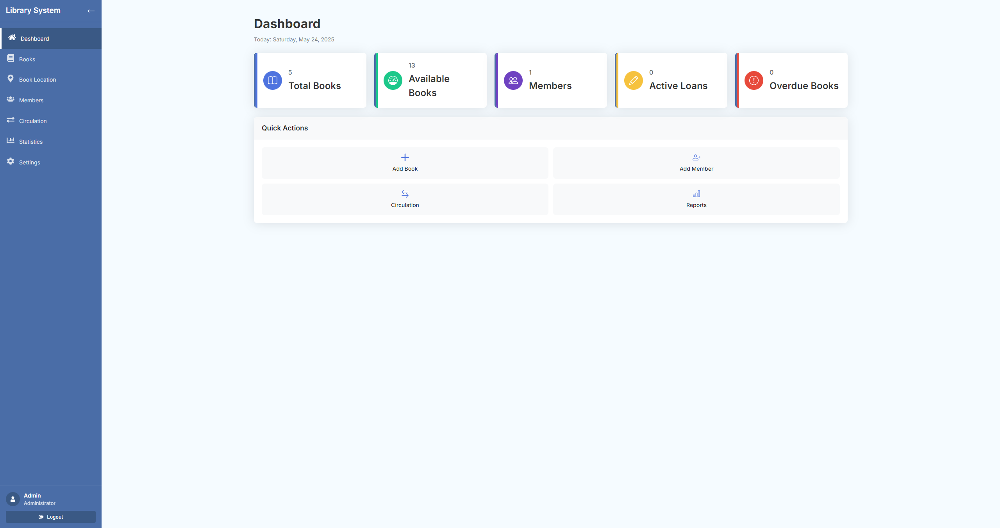
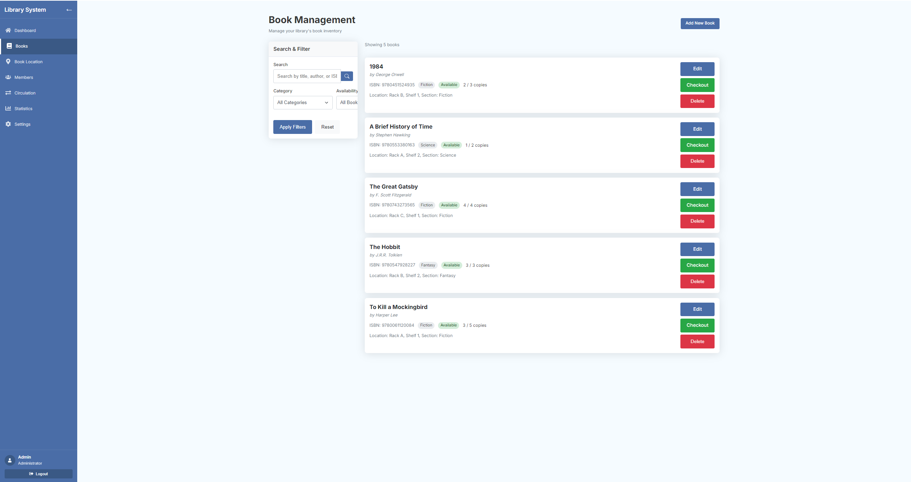
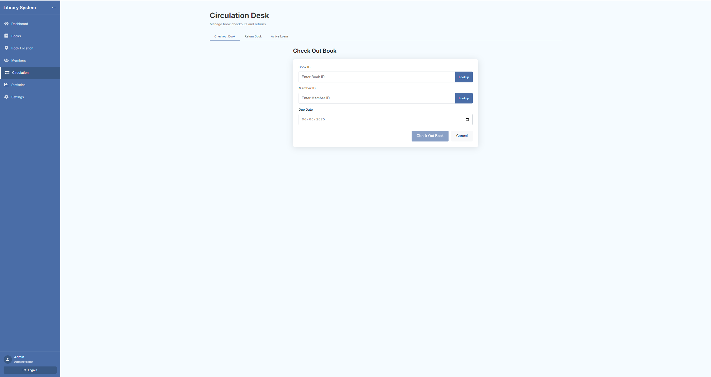

A comprehensive solution for streamlining library operations
The public library was facing several operational challenges with their existing manual system:
Tracking thousands of books across multiple categories and locations was time-consuming and error-prone.
The paper-based lending system led to long wait times for patrons and created excessive administrative work.
Tracking overdue books and notifying members was inconsistent, resulting in delayed returns and unavailable inventory.
Generating insights about library usage, popular materials, and resource allocation was difficult without centralized data.
I developed a comprehensive Library Management System that digitized and automated key operations, improving efficiency and user experience for both staff and library members.
A digital catalog with advanced search functionality, categorization, and status tracking.
Comprehensive member profiles with borrowing history, status, and contact information.
Streamlined check-out and return processes with barcode scanning integration and due date management.
Automated email reminders for due dates, overdue books, and holds availability.
Customizable reports on circulation statistics, inventory, popular materials, and member activity.
Mobile-friendly interface allowing staff to perform operations from anywhere in the library.
The core of the system is a well-structured relational database that efficiently organizes and connects library data.
This simplified schema illustrates the core relationships between books, members, and loans. The actual implementation includes additional tables for categories, publishers, reservations, and more.
The database design follows normalization principles to minimize redundancy while optimizing query performance for common operations.
I conducted detailed interviews with librarians and staff to understand workflow pain points and essential features needed in the system.
Developing the data model was a critical phase, ensuring proper relationships between entities while planning for future scalability.
Creating intuitive interfaces for both staff and member portals with a focus on ease of use and efficiency.
Incremental development with regular feedback sessions and testing with library staff to refine functionality.
Careful transfer of existing book and member records from the previous system, with validation protocols to ensure data integrity.
Comprehensive training sessions for library staff, with a phased rollout approach to minimize disruption to services.

The staff dashboard provides at-a-glance insights into library activity and quick access to common tasks.

The book management interface allows for easy addition, editing, and searching of the library catalog.

The loan processing screen streamlines check-outs and returns with barcode scanning support and member lookup.
The implementation of the Library Management System delivered significant improvements to library operations and services:
in time spent on administrative tasks, allowing staff to focus more on member services
book location and availability checking, improving member satisfaction
in book circulation within six months of system implementation
in overdue books through automated reminders and better tracking
"The Library Management System transformed our operations completely. What used to take us hours now takes minutes, and our members love how quickly we can help them find and borrow books. The reporting features have also given us valuable insights we never had before."
Legacy data migration presented issues with inconsistent formats and incomplete records.
Developed custom data cleaning scripts and a staged migration process with validation at each step to ensure data integrity.
Staff members had varying levels of technical experience, creating training challenges.
Created role-specific training materials with hands-on workshops and a comprehensive help system built into the application.
Complex reporting requirements needed to accommodate various stakeholder needs.
Implemented a flexible reporting engine with customizable parameters and saved report templates for recurring needs.
Understanding the day-to-day workflows of librarians was critical to creating an interface that truly enhanced their work rather than complicating it.
Investing time in proper data modeling early in the project created a strong foundation that supported all features and enabled future expansion.
Even the best system fails if users can't utilize it effectively. Comprehensive training was key to successful adoption.
The reporting capabilities unlocked valuable insights that helped the library better serve community needs and allocate resources effectively.
Let's discuss how I can help you build a custom database application for your business needs.